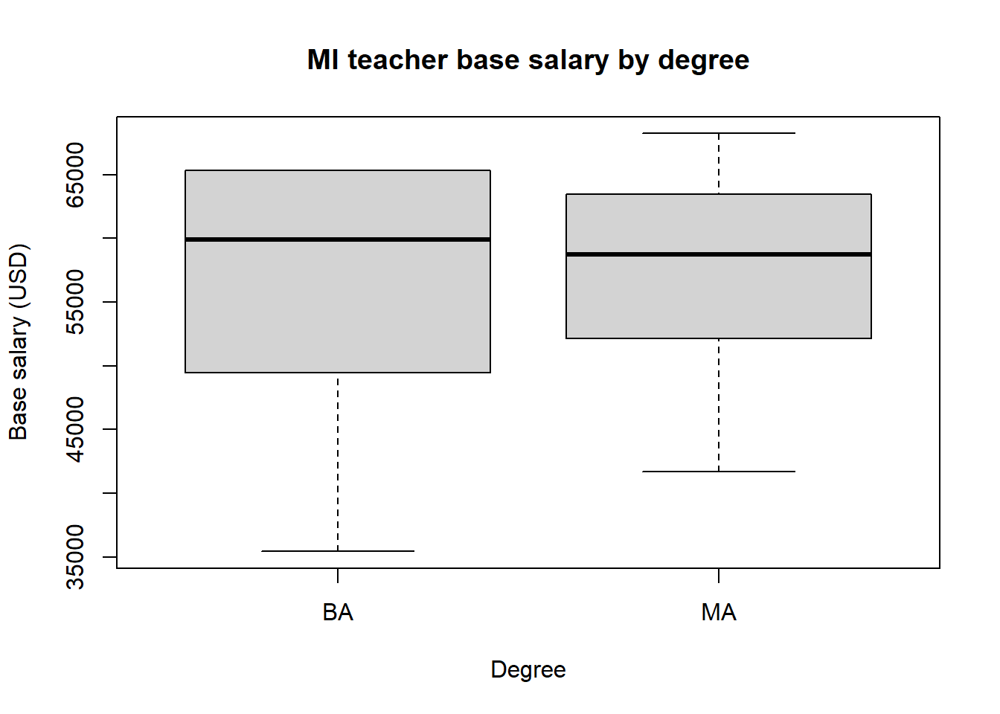
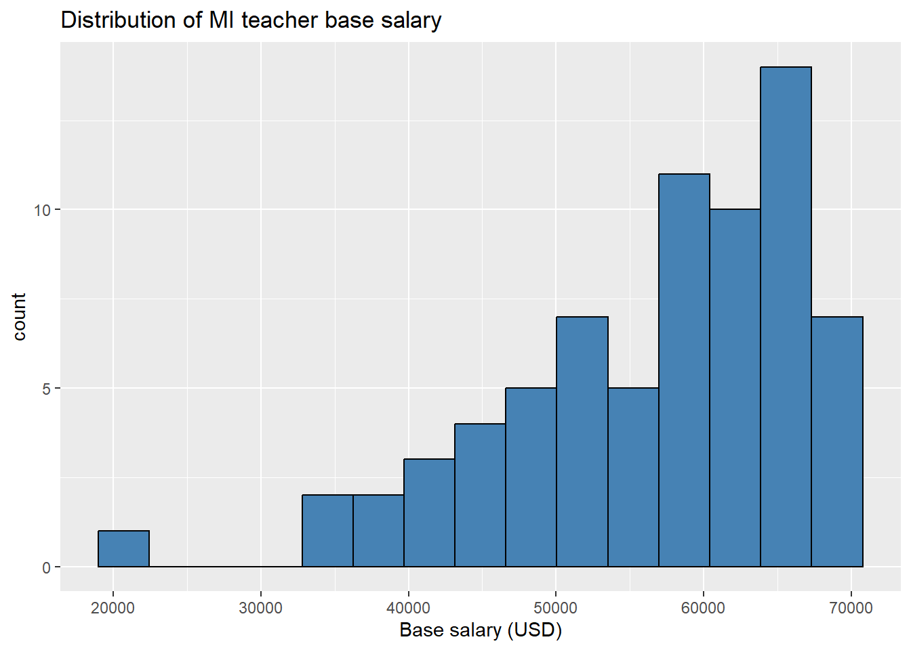
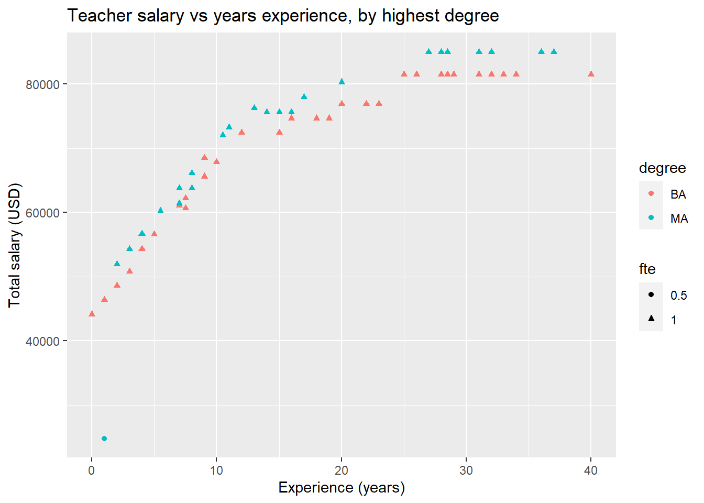
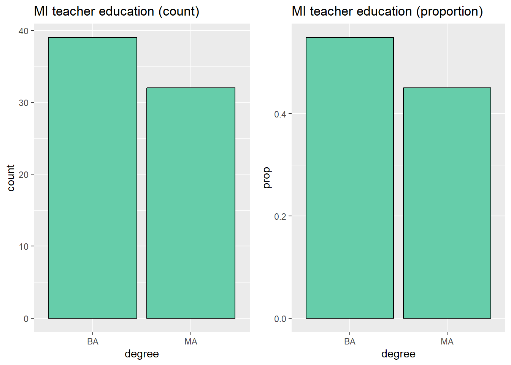
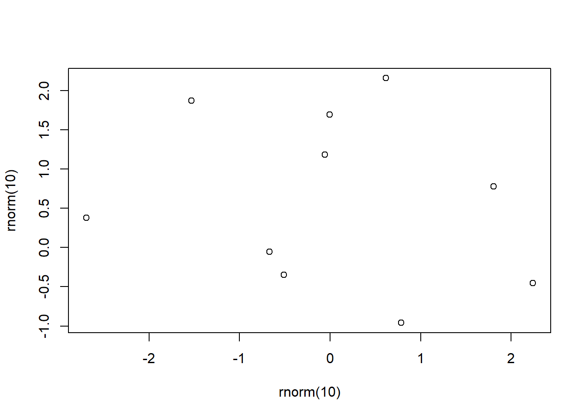
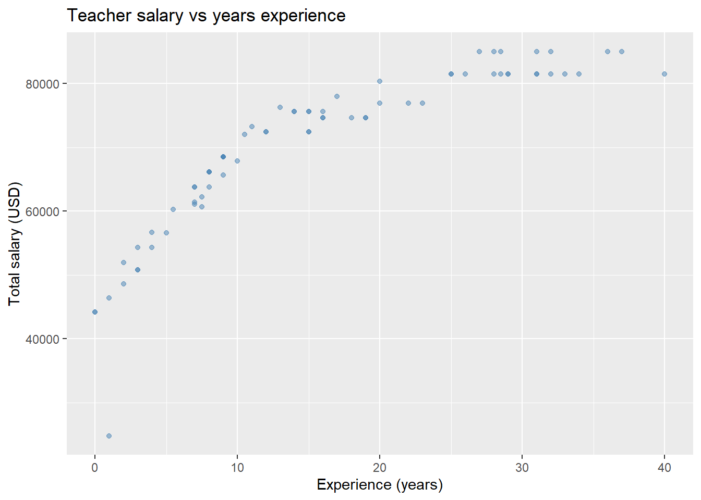
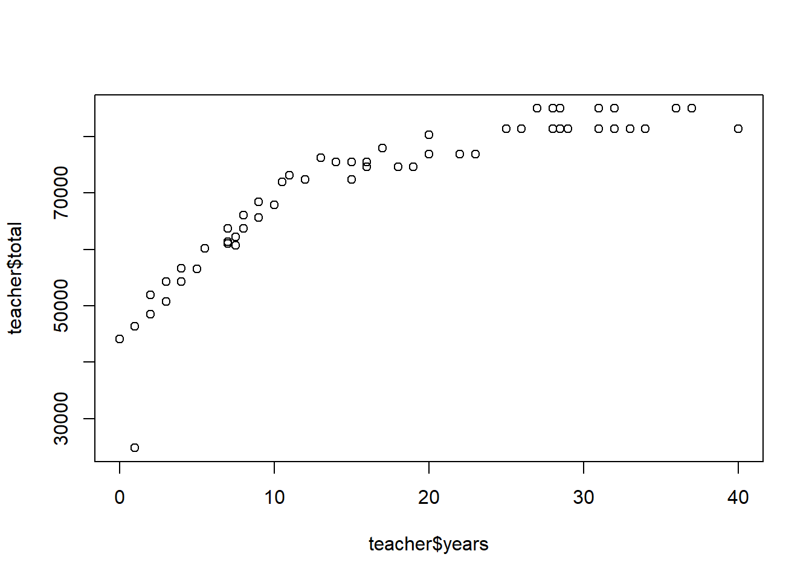

Chapter 3 Summary statistics and data visualization
At this point you should start feeling more comfortable using R. You know how to define lists, make calculations involving lists, define data frames, install and load packages, and work in and on R Markdown documents.
Up to this point you may feel like R has made your life harder; the point of this chapter is to convince you that, at least for doing statistics, R can make your life much, much easier.
In all of the examples below we will be using the teacher data set from the openintro package in R which contains salary data for 71 teachers in the St. Louis Public Schools and other variables that may influence salary. For more information, evaluate ?teacher in the console.
head(teacher)## # A tibble: 6 x 8
## id degree fte years base fica retirement total
## <fct> <fct> <fct> <dbl> <int> <dbl> <dbl> <dbl>
## 1 01 BA 1 5 45388 3472. 7689. 56549.
## 2 02 MA 1 15 60649 4640. 10274. 75563.
## 3 03 MA 1 16 60649 4640. 10274. 75563.
## 4 04 BA 1 10 54466 4167. 9227. 67859.
## 5 05 BA 1 26 65360 5000. 11072. 81432.
## 6 06 BA 1 28.5 65360 5000. 11072. 81432.3.1 Summary statistics in R
R makes calculating summary statistics a breeze so that we can focus instead on appropriately interpreting and using these statistics. Of course, the software can handle both categorical and numerical variables equally as well. Remember, when analyzing numerical variables, we typically look at the mean/standard deviation or median/IQR as summary statistics; when analyzing categorical variables, we typically look at sample counts and/or proportions.
3.1.1 Numerical variables
The commands we use to calculate all of your favorite summary statistics are fairly intuitive and straightforward in R. For example to calculate the mean of a data variable x, simply evaluate mean(x). The list below gives some common summary statistics and an example using the teacher data set. As usual, this is not a complete list.
mean(x, ...)andmedian(x, ...): calculates the average and median of the data set. IfxcontainsNA(unknown or not available) values, considering setting using the optionna.rm = Twhich removes theNAvalues from your list. The average base salary for a teacher from our data set is
mean(teacher$base)## [1] 56415.96median(teacher$base)## [1] 59914var(x, ...)andsd(x, ...): calculates the sample variance and standard deviation of the data set. For our base teacher salary:
var(teacher$base)## [1] 99684592sd(teacher$base)## [1] 9984.217quantile(x, probs = # or list of percentiles ): returns the value in your data set corresponding to the given percentiles. For instancequantile(x, probs = .25)returns the first quartile ofx.
quantile(teacher$base, probs = .25) #first quartile## 25%
## 51174quantile(teacher$base, probs = .75) #third quartile## 75%
## 65360quantile(teacher$base, probs = c(.25, .5, .75)) #Q1, median, Q3## 25% 50% 75%
## 51174 59914 65360IRQ(x,...): returns the interquartile range of the numerical variablex.
IQR(teacher$base)## [1] 14186quantile(teacher$base, .75) - quantile(teacher$base, .25) ## 75%
## 14186min(x,...)andmax(x,...): returns the minimum and maximum values of the numerical variblex.
min(teacher$base)## [1] 19900max(teacher$base)## [1] 68230summary(x,...): returns 6 summary statistics ifxis a numerical variable: min, first quartile, median, mean, third quartile, and max.
summary(teacher$base)## Min. 1st Qu. Median Mean 3rd Qu. Max.
## 19900 51174 59914 56416 65360 68230fivenum(x, ...): returns a classic five number summary of the numerical variablex: min, Q1, median, Q3, and max.
fivenum(teacher$base)## [1] 19900 51174 59914 65360 682303.1.2 Categorical variables
This section will focus on ways to create summary tables (ie frequency tables and contingency tables) for categorical variables. We will focus on using “base R” techniques for these purposes, but Chapter 3 will go into more detail about using the dplyr package to make the construction of more complicated summaries a bit easier. As above, the list below will help you summarize and analyze categorical variables.
summary(x, ...): ifxis a list of observations of a categorical variable,summary(x)will return a list counts for each value of the variable. Such a table is called a one-way frequency table. For example
unique(teacher$degree) #unique values this variable takes on## [1] BA MA
## Levels: BA MAsummary(teacher$degree) #count the number of occurences of each value## BA MA
## 39 32table(...): this function is more flexible thansummaryin that will return either a one-way table (if only one categorical variable is specified) or a two-way/contingincy table (if two categorical variables are specified).
#generates a one-way table
table(teacher$degree) ##
## BA MA
## 39 32#generates a two-way table
table(teacher$degree, teacher$fte) ##
## 0.5 1
## BA 0 39
## MA 1 31xtabs(~.): the output of this function is very similar totable(...), but the output labels the variables. The input syntax is slightly different because it uses R’s formula syntax. To illustrate the difference in input, we’ll create the same tables as the last example. Variable names follow the~and are separated by+.
#one-way table
xtabs(~degree, data = teacher)## degree
## BA MA
## 39 32#two-way table
xtabs(~degree + fte, data = teacher)## fte
## degree 0.5 1
## BA 0 39
## MA 1 31prop.table(...): the input ofprop.tableis a table itself. This function converts a table of frequencies into a table of proportions.
#define one-way table, convert to proportion table
tbl1 <- table(teacher$degree)
prop.table(tbl1)##
## BA MA
## 0.5492958 0.4507042#define two-way table, convert to proportion table
tbl2 <- xtabs(~degree + fte, data = teacher)
prop.table(tbl2)## fte
## degree 0.5 1
## BA 0.00000000 0.54929577
## MA 0.01408451 0.436619723.1.3 Combining it all
You can combine these summary statistic functions with various subsetting techniques from the previous chapter to tease out relationships between variables. As an example, using the teacher data set still, we’d expect teachers with more education to earn a higher salary on average. In the examples above we saw that there is only one part time teacher in the sample (the teacher with fte = 0.5) and this person has a lower salary simply from working less. Thus, to compare salaries by degree, we may want to exclude this observation. Doing this manually:
#subset for only full time teachers
fullTime <- subset(teacher, fte == "1")
#subset by degree
bach <- subset(fullTime, degree == "BA")
mast <- subset(fullTime, degree == "MA")
#finally calculate averages
mean(bach$base)## [1] 56257.1mean(mast$base)## [1] 57793.74It would be nice if we could streamline this process. We can do so using the by function. The input is by(dataToSummarize, variableToGroupBy, summaryFunctionToApply). Thus, to recreate our work above we can use
by(fullTime$base, fullTime$degree, mean)## fullTime$degree: BA
## [1] 56257.1
## -------------------------------------------------------
## fullTime$degree: MA
## [1] 57793.74As a final example, we will give a preview of creating the same table in using tidyversesyntax and grammar. Check out the next chapter for much more information, starting with the original teacher data set.
fullTime %>%
filter( fte == "1") %>% #select only full time
group_by(degree) %>% #specify variables to group by
summarize( n = n(), #create summary table, first column is a count
avgSal = mean(base)) #second column is average salary## # A tibble: 2 x 3
## degree n avgSal
## <fct> <int> <dbl>
## 1 BA 39 56257.
## 2 MA 31 57794.3.2 Data visualization
There are three main ways to create plots in R: base R, lattice, and ggplot2. We will only learn about base R and ggplot2 in this course. In practice, I use base R to make graphs quickly to get an idea of what’s going on and ggplot2 to make more visually appealing and complicated graphics. In general, you should be able to make most graphs using either package, but sometimes it is easier to use one over the other.
Caution: When creating data visualizations you may have to massage your data ahead of time to get it formatted correctly!
3.2.1 Base R
The basic function for plotting in base R is simply plot. Often, R will correctly interpret what type of graph you’re trying to make if you format the data correctly. To avoid possible confusion, it’s best to call the type of plot you’re trying to make directly.
Each of the functions below have a lot of options and arguments for customizing the visualizations. The best way to learn about these is to simply play around.
Histograms: When trying to visualize the distribution of a single numerical variable you often want to start with a histogram. The basic command for this is hist(...). The first histogram below just gives you a rough idea of what the histograms look like, the second demonstrates the types of options you can specify.
#no options specified
hist(teacher$base)
#vs many options specified
hist(teacher$base, #variable to make a histogram of
breaks = 11, #number of cells, can be left blank
freq = FALSE, #displays relative frequency on y-axis, if true, displays frequency
main = "Histogram of Teacher Base Salary", #sets main title
xlab = "Base salary (USD)", #x-axis label
ylab = "Frequency" #y-axis label, can be left blank in this case
)Scatter plots: when checking for an association between two numerical variables you will often want to start your analysis with a scatter plot. The function plot(x,y) creates a scatter plot of \(x\) and \(y\). Make sure these lists have the same length!
As above, we’ll make a basic scatter plot, then play around with the labels and options of the same graph.
#basic plot of years experience vs total teacher salary
plot(teacher$years, teacher$total)
#same plot with updated options
plot( teacher$years, teacher$total,
pch = 16, #change mark to filled in circle
main = "Teacher experience vs total salary",
xlab = "Teaching experience (in years)",
ylab = "Total annual salary (USD)")Bar charts: bar charts help visualize one or two categorical variables; you can think of them as a visualization of one-way and two way tables. The basic function is, no surprise, barplot(...), but you must input a table instead of vectors.
#define our tables
tbl1 <- prop.table(table(teacher$degree)) # one-way rel. freq. table
tbl2 <- xtabs(~degree + fte, data = teacher ) #two-way table
#visualize one-way table
barplot(tbl1,
main = "Relative frequency of teacher degrees",
xlab = "Degree",
ylab = "Proportion")
#visualize two-way table
barplot(tbl2,
main = "Teacher employment employment by degree",
xlab = "Employment (by FTE)",
ylab = "Frequency",
col = c("red", "blue"), #set colors for degree types, alphabetically
legend = rownames(tbl2) #create legend with rows from the table
)Box plots: Box plots help us visualize a the distribution of a numerical variable; stacking box plots side by side help us compare the distribution of a numerical variable over several values of a categorical variable. No suprise, both it is easy to make these plots in both situations using the function boxplot.
The syntax for creating a box plot for a single numerical variable is simple, as the next example shows.
boxplot(teacher$base,
ylab = "Base salary (USD)",
main = "Distribution of MI teacher salaries")When creating a box plot for a numerical variable over several values of a categorical variable, you need to use R’s formula syntax. This syntax will appear a few more times throughout the course since it is used often when looking at relationships between two variables. The basic notation is Response variable ~ explanatory variables or, if your response variable is y and your explanatory variable is x, simply y ~ x. Note the ~ symbol is to the left of the 1 key on your keyboard. The next examples shows a breakdown of teacher salary by highest degree.
boxplot(base ~ degree, data = fullTime,
xlab = "Degree",
ylab = "Base salary (USD)",
main = "MI teacher base salary by degree")
Before moving on to plotting with ggplot2, we remind the reader that this is by no means a comprehensive list of all plotting features in R. Moreover, each of the plotting functions used above have many more features and are very customizable; you can go down a deep rabbit hole making plots look just how you want them to.
3.2.2 ggplot2
This section will guide you through using the package ggplot2 for data visualization in R. Many find the output from ggplot2 to be more visually appealing than plots from base R, but the plotting syntax in ggplot2 is often much more intuitive than plotting in base R, especially if you’re making more complicated visualizations. The basic idea of plotting with ggplot2 is to
Open an empty plot based on a particular data set using the function
ggplot(data, aes(...))wheredatais the name of the data set you’re using andaes(...)specifies the aesthetic of the plot to come. You specify which variables are assigned to which axes insideaes(...). This will become clearer through examples.Add layers to the empty plot to construct the visualization you’re imagining, separating each layer with
+. These layers aregeoms, labels, legends, etc. Again, this will become much clearer through some examples.
The ability to sequentially add layers to a plot makes complicated plotting more intuitive in ggplot2. For example, adding a line to a scatter plot is simple under this organization because you simply have to add another layer! We will reproduce the plots from the previous section in the examples that follow, tweaking some parameters here and there to give you an idea of how to change visualizations.
Histograms: The geom for a histogram is geom_histogram(...). Notice that our plot below does open an empty plot first, then adds layers to it.
# open empty plot
ggplot(teacher, aes(x = base)) +
# add histogram layer with 15 bins. fill changes bar color, but color changes outline color
geom_histogram(bins = 15, fill = "steelblue", color = "black") +
# adds label layer with only a title. can add subtitle and caption.
labs( title = "Distribution of MI teacher base salary") +
# changes x-axis label
xlab("Base salary (USD)")Scatter plots: The geom for a scatter plot is geom_point(...). You can tweak the appearance quite a bit using different arguments inside this (and all!) geoms. For instance the option alpha sets the transparency, color the color of each point, shape the shape, etc.
#open empty plot and specify explanatory (x) and response (y) variables
ggplot(teacher, aes(x = years, y = total)) +
geom_point(color = "steelblue", alpha = .5) +
labs(title = "Teacher salary vs years experience") +
xlab("Experience (years)") +
ylab("Total salary (USD)")
Adding a line of best fit (see Chapter 8 for more information on modeling) to a scatter plot is straightforward with a geom_smooth(...) layer, setting method = 'lm' (this means add a linear model to your plot)
ggplot(teacher, aes(x = years, y = total)) +
geom_point() +
geom_smooth( method = 'lm', formula = y~x, se = FALSE) + #adds line of best fit without error bars
labs(title = "Teacher salary vs years experience") +
xlab("Experience (years)") +
ylab("Total salary (USD)")
We can make the same plot, but color the points by each teacher’s degree and change the shape of each point by full/part time status.
ggplot(teacher, aes(x = years, y = total, color = degree)) +
geom_point(aes(shape = fte)) +
labs(title = "Teacher salary vs years experience, by highest degree") +
xlab("Experience (years)") +
ylab("Total salary (USD)")This school district’s pay scale becomes much more apparent! Teachers with masters degrees earn a little bit more, but everyone’s salary increases at roughly the same rate during their first 11 years, then flattens out. We also see that the outlier with minimal experience and low pay is also the only part-time employee.
As a final example of tweaking scatter plots, we can even add a line of best fit for each degree group!
ggplot(teacher, aes(x = years, y = total, color = degree)) +
geom_point(aes(shape = fte)) +
geom_smooth(method = 'lm', formula = y~x, se = FALSE) +
labs(title = "Teacher salary vs years experience, by highest degree") +
xlab("Experience (years)") +
ylab("Total salary (USD)")You can see that it is easy to start adding a lot of information to a plot! Be careful, however; there is a fine line between a detailed, informative visualization, and a confusing, overly busy one.
Bar graphs: We can make bar graphs easily with ggplot2 using the geom_bar(...) layer. The first two plots below look identical at first pass, but the one on the left is a frequency bar chart, so displays the raw count on the \(y\)-axis, but the chart on the right is a relative bar chart. To make the relative frequency bar chart, we include the option y = ..prop.. in the aesthetic. We also have to specify the number of groups to ensure that our proportions are out of the total.
# first load a package for side by side plots
library(gridExtra)
# Frequency bar plot
p1 <- ggplot(teacher, aes(x = degree)) +
geom_bar(fill = "aquamarine3", color = "black") +
labs( title = "MI teacher education (count)")
# relative frequency bar plot
p2 <- ggplot(teacher, aes(x = degree, y = ..prop.., group =1)) +
geom_bar(fill = "aquamarine3", color = "black") +
labs( title = "MI teacher education (proportion)")
#display both plots side by side.
grid.arrange(p1,p2, ncol = 2) Next we’ll make stacked and side by side box plots.
Next we’ll make stacked and side by side box plots.
#stacked
p1 <- ggplot(teacher, aes(x = degree, fill = fte)) +
geom_bar(color = "black") +
labs(title = "MI teacher education")
#side by side
p2 <- ggplot(teacher, aes(x = degree, fill = fte)) +
geom_bar( position = position_dodge(), color = "black") + # big change is setting position!
labs(title = "MI teacher education")
#display both plots side by side
grid.arrange(p1, p2, ncol = 2)
One could combine our first and second examples of box plots to get side-by-side and stacked relative frequency plots. This takes a little bit of extra fuss that can be avoided by first manipulating the data you input into ggplot2. In other words, to make these types of plots, make the summary calculations on your own earlier, then feed those into the appropriate geom.
Box plots: We will finish up our brief tour of ggplot2 by making a few box plots. The geom for box plots is, no surprise, geom_boxplot(...). Let’s first look at a box plot of the teacher’s total salary.
ggplot(teacher, aes(y = total)) +
geom_boxplot() +
theme(axis.text.x=element_blank(), #this layer just removes the scale on the x-axis
axis.ticks.x=element_blank()) +
labs(title = "Total MI teacher salary")By adding an x value to our aesthetic, we can produce boxplots of the range of values of a categorical variable. The example below also adds a point representing the mean of each group and colors the outlier red.
ggplot(teacher, aes(x = degree, y = total)) +
geom_boxplot(outlier.color = "red",
outlier.size = 2) +
stat_summary_bin(fun = "mean",
geom = "point",
color = "blue",
size = 2) +
labs(title = "MI teacher salaries by degree")
There are many, many more geoms, options, and possible visualizations you can make with ggplot2; this section should give you enough to get started and make some high quality graphics. For more information, check out the official ggplot2 guide.
3.2.3 Saving plots
Now that you know how to make plots in R, what do you do with them? Data visualization is essential for two aspects of data analysis: exploration and communication. Initial data visualization can help guide your analysis by illuminating patterns and trends that may be difficult to observe in your raw data. For the same reason, you will want to include high quality visualizations when you write up your work; visualizations help readers get a good understanding of your work without digging deep into the details. So how do you get your visualizations into a write up? There are two possibilities:
Do your entire analysis and write-up in an RMarkdown document! You can hide code chunks so that output only shows plots and calculation results. You can use RMarkdown to create impressive, professional documents.
You can save your plot in your favorite file format. There are two ways to do this, from the console or from the File/Plot explorer window in RStudio. Both options will save the file to whatever directory or folder you are currently working in.
File/Plot Explorer: When you make a plot in RStudio it displays in the bottom right Plot window. That window has an “Export” button. Clicking this button reveals a bunch of options for saving your plot. Pick whichever you think is best for your application.
From the console: You can also export an image programmatically. The basic process is 1) open a “graphics device”, 2) code your plot, then close the graphics device. This option is best if you have to save multiple images or want to customize the file you’re saving. As an example, the following code will create a PDF file called “salary_viz.pdf” of the side-by-side box plot we created at the end of the base R plotting section.
pdf("salary_viz.pdf") #opens graphic device
boxplot(base ~ degree, data = fullTime,
xlab = "Degree",
ylab = "Base salary (USD)",
main = "MI teacher base salary by degree")
dev.off()You can save your plot in many different file formats; the command to open the appropriate graphics device is usually obvious. For instance, a png graphics device is opened with the function png(...).